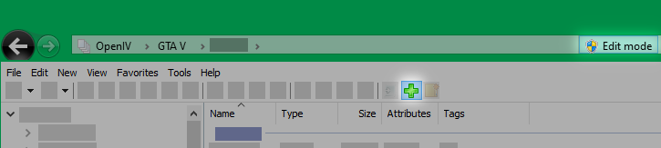

Impossible d'ajouter des fichiers
Résolution
-
N'exécutez pas OpenIV en tant qu'administrateur, cela bloque la fonction cliquer-glisser.
Voir la solution liée -
Vérifiez que vous avez installé ASI Manager et OpenIV.asi.
Allez dans "Tools" > "ASI Manager" et vérifiez qu'ils sont installés.
Si c'est déjà le cas, essayez de les réinstaller.
-
Vérifiez que vous avez activé l' "Edit mode".

-
Si vous glissez des fichiers directement d'une archive (.zip, .rar ...), essayez d'extraire les fichiers (sur votre Bureau par exemple) dans un premier temps, puis de glisser les fichiers extrait sur OpenIV ensuite.

-
Fermez le jeu. S'il semble déjà fermé, vérifiez dans le gestionnaire des tâches.
-
Si le problème est toujours présent, utilisez le bouton pour ajouter les fichiers
